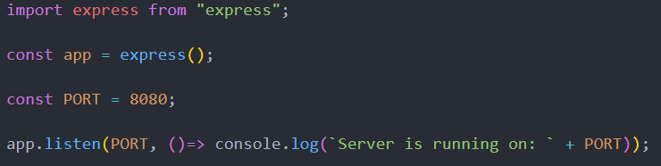
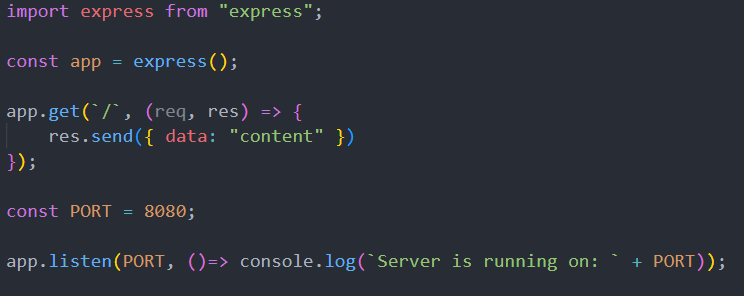

For setting up our package.json file we have several options.
We can install it along with express with:
We can also manually just create the file. If we do this we just create the file called package.json, and we can input the information that we want in it ourselves. Then afterwards we can call this command to install all the dependencies:
package.json is a component for our servers that include the version of dependencies in generel and scripts.
For instance we use type module in our package.json to be able to import and export to organize our code.
We can also use our package.json to set up our projects and then install everything with npm install.
Our second week we went through ideas and thoughts about functions in javascript.
First we went through regular functions and how they work. A function consist of a function followed by a name, then we have () for parameter followed by {} for the content of the function. Example:
function aName(parameter){
console.log(parameter);
};
We talked about another way to write a function by assigning it to a constant. Example:
const a = function(number, numberTwo){
return number*numberTwo;
};
We talked about anonymous functions, functions that does not have a name example:
const a = (number, numberTwo) => {
return number*numberTwo;
};
We talked about arrow function and how they can be used to reduce the code. For example the line above would be. Here we can see that we also don't need a return because arrow functions have an implicit return. Example:
const a = (number, numberTwo) => number*numberTwo;
We talked about callback functions. Callback functions is executable code that is sent as an assignment to other functions.
We can print this out to make it easier to see what is going on. Example:
function someFunction(number, genericAction){
return genericAction(number);
};
const announceNumber = (number) => `This is number ${number}`
const annouce = someFunction("1", announceNumber());
console.log(announce);
Another way to use callbacks is by using an arrow function directly in the parameter of the function.
We could print this out to make it easier to see what is going on. Example:
console.log(someFunction("1", (number) => `This is a new ${number}`));
When we talk about const and let it's important to use the correct assignment. One of the reasons for this is that we can reassign let variables, but we cannot reassign const variables. Const is constant in the value. That means it cannot be reassigned to a new type of value. For example this would work:
const a = ["a", "b"];
const a = [];
Whereas this would not work because we are trying to reassign the value into a string.
const a = ""
The general case is to use const whenever possible, but if we can't we use let. A good idea is to think about if we need to reassign the value. If we don't we use const, if we do we use let. This is the most obvious example:
for(let i = 0; i < 10; i++){
console.log(i);
}
Another example could be us getting an input from somewhere and needing to reassign a variable outside depending on the input.
let something;
if(this){
something = "thatthing"
} else {
something = "anotherthing"
}
Lastly we should never use global variables or var because they polute the scope. Other reasons not to use var is that it gets impossible to do some actions with it. For instance this doesn't work.
{
var someValue = true;
{
var someValue = false;>
}
console.log(someValue)
}
This would polute the outer scope resulting in this being false. Where as we can fix this with let.
{
let someValue = true;
{
let someValue = false;>
}
console.log(someValue)
}
Here the answer is true because the false in the innerscope is never used. So let is a solution to this problem.
For settings up express we can do it several ways.
We can manually write it into our package.json and install it with npm.
Or we can install it with commands using:
After setting up express with either way. We can then make our app.js file and import express into it.
And then is technically all we need to set up express in our project and start using it. We import with import, and then we instantiate it with const app.
After this we can set up our route. A route consists of an endpoint, a request and response and a callback function. So all we need to add to our code after setting up express is this.
Our node_modules package is imoprted when we import anything with npm. It contains all the modules that we need to use for the dependencies we chose. The smart thing about the node_modules is that we can actually see the code inside of it and there's also guides within those files for use.
The general use for us at this point is that we know that when we install express or any other dependcy we will know that it is within our node_modules package in our project.
This week we briefly went over linting. We went over ESLint and what the point is of these tools. Linting not only error checks our code, not execute but runs through it and checks for errors. Linting also checks for code quality, by identifying code patterns and enforcing best practices for us. We also talked about ESLint being able to be customized, but we had to look into that ourselves, i have not done that yet.